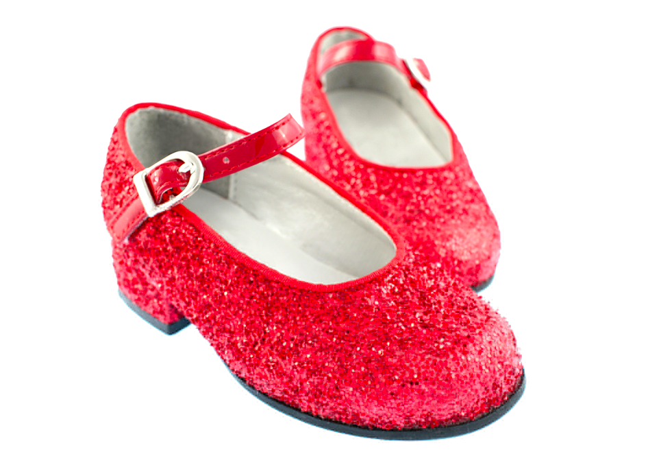
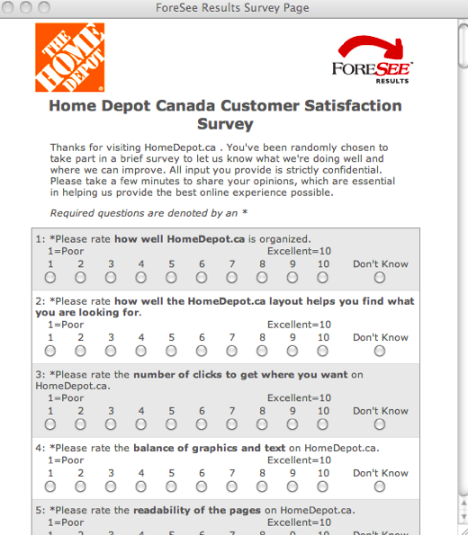
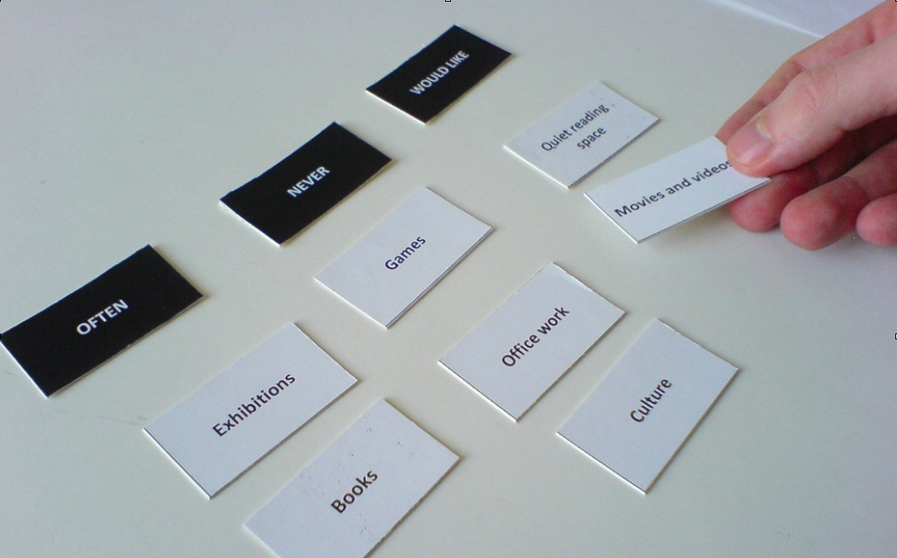
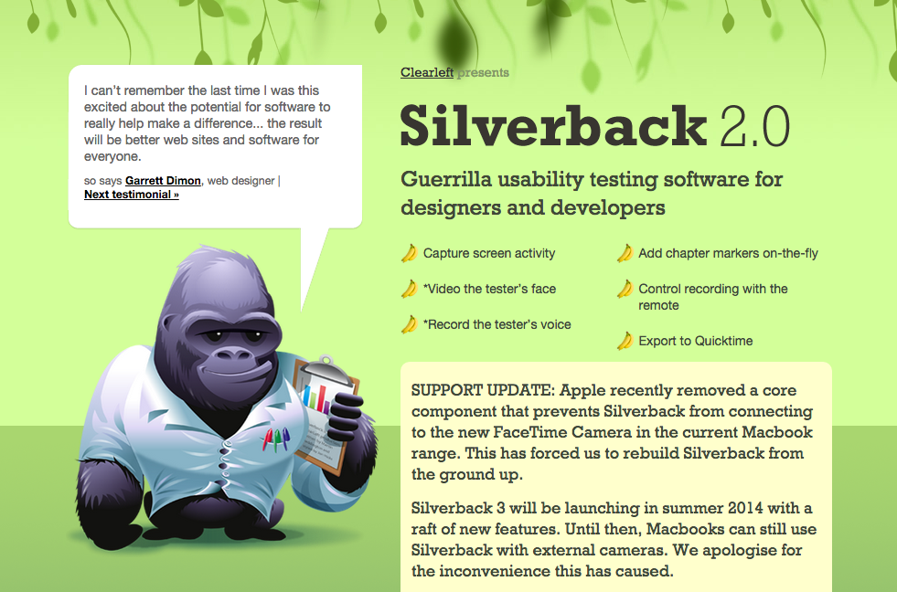
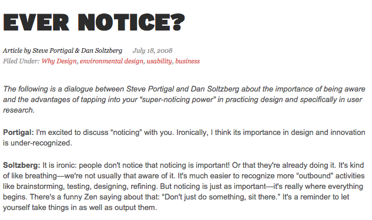
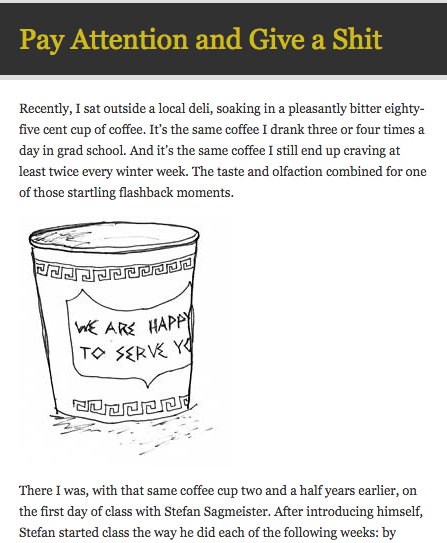

Users
What other profession calls their customers "users"?
Getting to know your users
As a designer, you should get to know your users. This seems like a simple and obvious statement, right? But many designers still fail to make the effort to know their audience. So let's take a step back and ask, "Why is it important to get to know our audience?" I will make a not-very-bold claim that a design is not successful unless it has an audience. When we design something we do it with people in mind. For our designs to be successful, we must exercise some level of empathy with our audience.
Let's take a moment to define empathy. Empathy is understanding what others are feeling because you have experienced it yourself or can put yourself in their shoes.
What's the difference between empathy and sympathy?
How do we achieve a high degree of empathy? That's where the tools of user research come in.
User Research Tools
- Marketing Data
- Log Files & Customer Support data
- Surveys
- Usability Testing
- Ethnographic Research
- Super Noticing
Marketing Data
Marketing data is typically known as customer segment data, or demographics. This includes details such as age, sex, marital status, education, residence, and income. This data can come from a variety of sources. Census data is probably the most popular source for large-scale demographic data. But for more targeted information, you could write surveys or polls that would find more specific data. You could also pay for reports that are produced by research agencies such as Forrester, Gartner, and Angus Reid.
Customer Support Centres & Log Files/Analytics
Customer support can tell you:
- What are the most frequently asked questions
- Which calls or requests take the most time to resolve
- Which topics cause the most frustration
Log files can tell you:
- Number of visits
- Pages most visited
- Length of visits
- Browser & operating system use
- Referral sites
- Search terms
- Heat maps to show where clicks happen on your pages
Let's take a look at Google Analytics...
User Research Surveys
Because surveys are customized to you, they can extract any information you want. They can tell you things like:
- How old your users are
- What kind of Internet connection they use
- Gender make-up of your audience
- Economic background
- Is the site or application satisfying to use

There are whole courses devoted to teaching you how to do surveys. I'll offer a few tips here:
- Try to use simple multiple-choice questions. Avoid asking the user to enter any text.
- Questions should be specific, mutually-exclusive, closed-ended
- Mini-surveys can be very useful (e.g. online polls). Sports website use these heavily to engage their audiences.
Usability Testing
Many people think that usability tests have to look and feel like this:
They don't have to be that way at all. I prefer the lighter, easier method that Steve Krug wrote about in his excellent book - Rocket Surgery Made Easy. Here is a demo video of him performing a test:
Following his method allows people to overcome their usual excuses to not perform usability tests.
Card Sorting
Card sorting is a research method that attempts to extract how people think about and organize information. Participants are given small cards or sticky notes, then asked to group them into logical groups. After a few participants perform the same task on the same cards, you should be able to see patterns in how people group the items.
Video Observation
Video observations allow us to capture an accurate picture of an interaction; however, they can be intrusive. The moment you aim a camera at somebody, they will change their behaviour.
Another form of video observation includes doing screen recordings of usability sessions. The Silverback application is one way of capturing on-screen interactions along with the participants video/voice.
Ethnographic Research
- Observing behaviours in natural settings
- Comes from the field of anthropology as a method to study ‘outside’ cultures
- Studying how people live, work and use tools
- Researcher can be an onlooker, participant (who is observing), or a bit of both
Super Noticing
This isn't exactly a research "tool". It's more of a state of mind when you are doing research. The article in which I discovered the term is called "Ever Notice?", written by Steve Portigal and Dan Solzberg.
Here's another relevant article on Super Noticing:
"It's not the large things that send a man to a madhouse. Death, he is ready for, or, murder, incest, robbery, fire, flood. No. It's the continuing series of small tragedies that send a man to a madhouse..."
- Charles Bukowski
So I guess what I'm saying is that you should sweat the small stuff. It's an important part of your craft as a designer.
Super Listening
The close sibling to Super Noticing is Super Listening.

When you are doing your research, you should be doing much more listening than speaking. And when you listen to another person, you should put your full energy into paying attention. Listen for the nuances of their words and tone. Listen for the brief pauses. Ask questions to clarify why they paused or why they chose the words that they did.
What do your users need to do?
- What are the key user tasks?
- Which tasks are the most important on any given page?
- This leads us to functionality and usability...